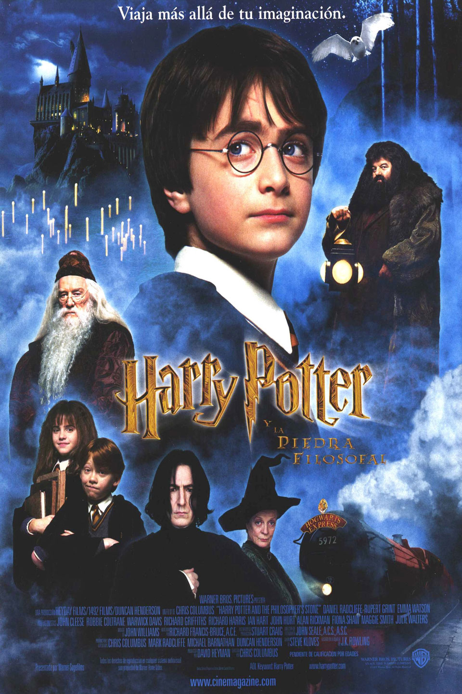
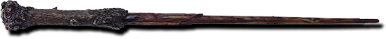
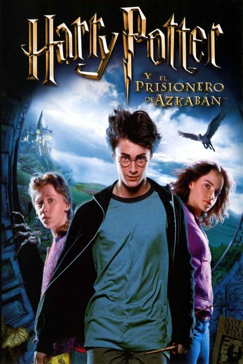
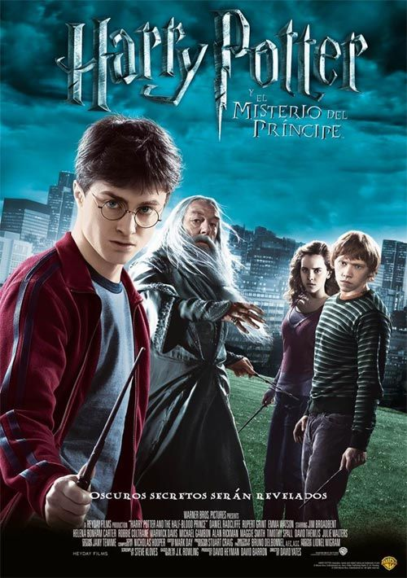
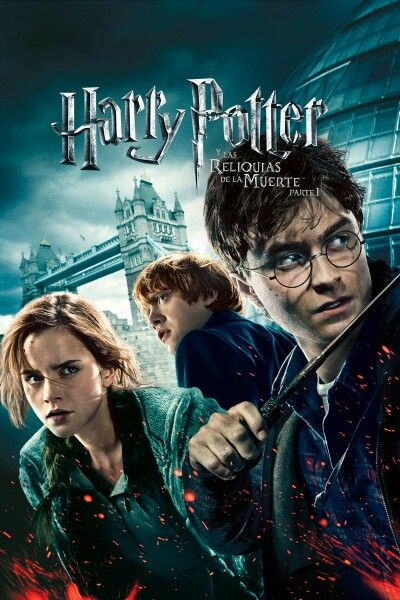

Godric Gryffindor fue un mago que vivió en la época medieval y uno de los cuatro fundadores del Colegio Hogwarts de Magia y Hechicería.

La sala común de Gryffindor sirve como una sala común para la casa Gryffindor en el Colegio Hogwarts de Magia y Hechicería.

La Espada de Godric Gryffindor es un objeto hecho por duendes y propiedad del famoso mago Godric Gryffindor, uno de los cuatro fundadores del Colegio Hogwarts de Magia y Hechicería.

Minerva McGonagall es subdirectora, jefa de la casa de Gryffindor, profesora de transformaciones, y más tarde directora en Hogwarts.

Salazar Slytherin es un famoso mago de sangre pura de la Edad Media. Es uno de los cuatro fundadores del Colegio Hogwarts de Magia y Hechicería.

La Mazmorra de Slytherin, también conocidas como la sala común de Slytherin, es el espacio reservado para los estudiantes de la Casa Slytherin en el Colegio Hogwarts de Magia y Hechicería.

El guardapelo fue una creación de Salazar Slytherin, el célebre fundador de la Casa Slytherin en el Colegio Hogwarts de Magia y Hechicería.

Severus Snape es el profesor de Pociones en el Colegio Hogwarts de Magia y Hechicería. También es jefe de la casa Slytherin.

Albus Percival Wulfric Brian Dumbledore es, hasta el final de Harry Potter y el Misterio del Príncipe, el director del Colegio Hogwarts de Magia y Hechicería.

El Castillo de Hogwarts es un edificio mágico con muchas torres y torretas, construido hace más de mil años por un mago arquitecto.

El Sombrero Seleccionador tiene la misión de determinar a cuál de las cuatro casas (Gryffindor, Hufflepuff, Ravenclaw o Slytherin) debe pertenecer un nuevo estudiante al entrar en Hogwarts.

El Profesor Rubeus Hagrid, familiarmente conocido sólo por su apellido, "Hagrid", era un mago semi gigante.

Helga Hufflepuff fue una bruja de la época medieval y fue una de los cuatro fundadores del Colegio Hogwarts de Magia y Hechicería.

La sala común de Hufflepuff esta situada en el sótano del Colegio Hogwarts de Magia y Hechicería. Se dice que es "la sala común más acogedora de todas".

La copa de Helga Hufflepuff es una pequeña copa de oro de dos asas con un tejón grabado.

Madame profesora Pomona Sprout es una bruja que trabajó como Jefa de la Casa de Hufflepuff y Jefa del Departamento de Herbología en el Colegio Hogwarts de Magia y Hechicería.

La Profesora Rowena Ravenclaw era una bruja escocesa que vivía en la Edad Media. Destaca por su inteligencia y creatividad. Fue una de los cuatro fundadores del Colegio Hogwarts de Magia y Hechicería.

La Torre de Ravenclaw se encuentra en el lado oeste de Hogwarts, la escalera que conduce a la sala común se encuentra probablemente en el séptimo piso, y es la ubicación de la Sala Común de Ravenclaw y los dormitorios.

La Diadema de Ravenclaw fue la única reliquia conocida que perteneció a Rowena Ravenclaw, la fundadora de la Casa de Ravenclaw en el Colegio Hogwarts de Magia y Hechicería.

Filius Flitwick es el profesor de encantamientos en Hogwarts y el jefe de la casa de Ravenclaw.


Atrae un objeto hacia el que lo lanza.

Crea un chorro de agua potable desde la varita.

Desbloquea un objetivo (puertas, cerraduras, ventanas...).

Reduce la velocidad de un objetivo.

Detona un objetivo con una pequeña explosión.

Corta un hechizo de oponente.

Atrapa a un objetivo en una burbuja.

La única defensa contra los dementores.

Hace que los demás hechizos se detengan.

Hechizo ofensivo que hace retroceder al objetivo.

Enciende fuego.

Hechizo que se utiliza para modificar el clima.
Harry Potter y la Piedra FilosofalEl día de su cumpleaños, Harry Potter descubre que es hijo de dos conocidos hechiceros, de los que ha heredado poderes mágicos. Debe asistir a una famosa escuela de magia y hechicería, donde entabla una amistad con dos jóvenes que se convertirán en sus compañeros de aventura. Durante su primer año en Hogwarts, descubre que un malévolo y poderoso mago llamado Voldemort está en busca de una piedra filosofal que alarga la vida de quien la posee. |
 |
|

|
|
 |
Harry Potter y la Camara SecretaHarry regresa a su segundo año a Hogwarts, pero descubre que cosas malas ocurren debido a que un sitio llamado la Cámara de los Secretos ha sido abierto por el heredero de Slytherin y hará que los hijos de muggles, los impuros, aparezcan petrificados misteriosamente por un animal monstruoso. |
|
|
|
Harry Potter y el Prisionero de AzkabanCuando Harry Potter y sus amigos vuelven a Hogwarts para cursar su tercer año de estudios, se ven involucrados en un misterio: de la prisión para magos de Azkaban se ha fugado Sirius Black, un peligroso mago que fue cómplice de Lord Voldemort y que intentará vengarse de Harry Potter. El joven aprendiz de mago contribuyó en gran medida a la condena de Sirius, por lo que hay razones para temer por su vida. |
 |
|
|
|
 |
Harry Potter y el Caliz de FuegoLa cuarta parte de la serie del niño mago comienza con la Copa Internacional de Quidditch. Cuenta también el inicio de la atracción por Cho Chang y otro año de magia, en el que una gran sorpresa obligará a Harry a enfrentarse a muchos desafíos temibles. También habrá un torneo de magia para tres escuelas, y el temido regreso de "Aquel-que-no-debe-ser-nombrado". |
|
|
|
Harry Potter y la Orden del FenixEn su quinto año en Hogwarts, Harry descubre que muchos integrantes de la comunidad de magos no conocen la verdad acerca de su encuentro con Lord Voldemort. Cornelius Fudge, ministro de magia, designa a Dolores Umbridge como maestra de defensa contra de las artes oscuras porque cree que el profesor Dumbledore planea apoderarse de su trabajo. Pero sus enseñanzas son inadecuadas, por lo que Harry prepara a los estudiantes para defender la escuela en contra del mal. |
 |
|
|
|
|  |
Harry Potter y el Principe MestizoHarry descubre un poderoso libro y, mientras trata de descubrir sus orígenes, colabora con Dumbledore en la búsqueda de una serie de objetos mágicos que ayudarán en la destrucción de Lord Voldemort. |
|
|
|
Harry Potter y las Reliquias de la Muerte - Parte 1Harry, Ron y Hermione se marchan de Hogwarts para iniciar su misión más importante: tienen que destruir los horrocruxes, el secreto del poder y la inmortalidad de Voldemort, en los que el temido mago oscuro guarda los fragmentos de su alma. |
 |
|
|
|
 |
Harry Potter y las Reliquias de la Muerte - Parte 2El enfrentamiento entre el bien y el mal llega a su punto máximo. La búsqueda de los horrocruxes lleva a los amigos a Hogwarts, donde Harry, Ron y Hermione se preparan para una última batalla contra Lord Voldemort y sus fieles secuaces, los mortífagos, para decidir el futuro del mundo mágico. |